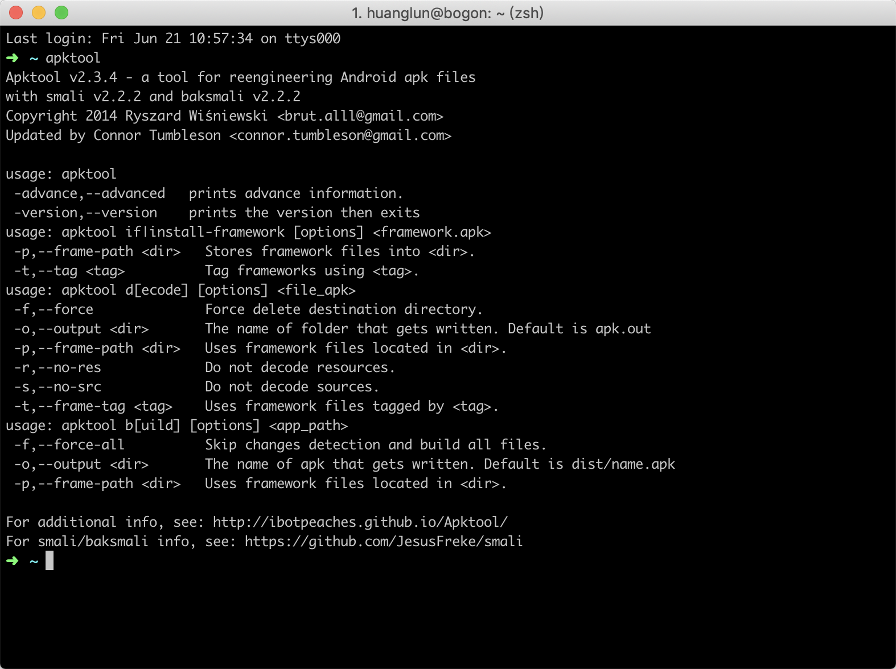
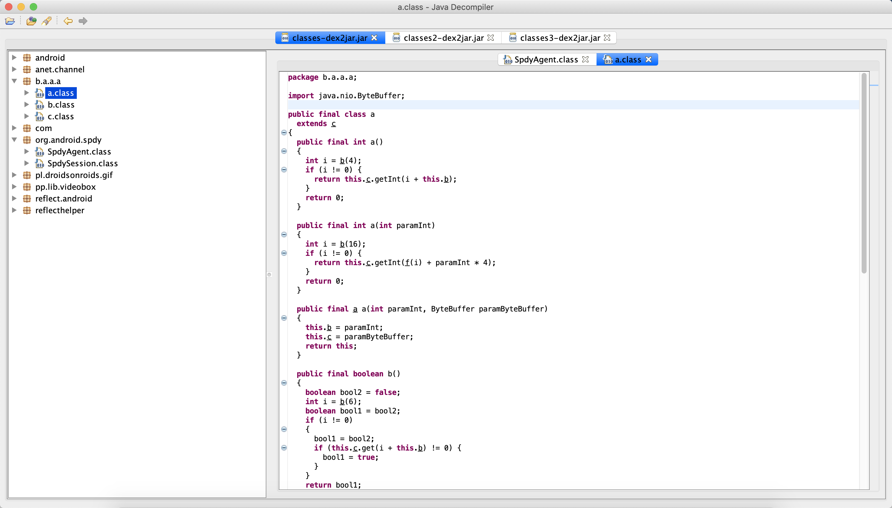

在上一篇描述了如何进行APP网络包的分析，本文将阐述如何反编译APP。
我们为什么要反编译APP喃？因为反编译后我们能够查看APP的运行逻辑，APP使用的相关技术，找到其中对我们有用的信息，后期还可以使用Xposed对APP进行注入，找到注入点。
1、apktool
apktool是一个对app进行反编译的软件，当我们直接通过压缩软件对APP进行解压后，我们也能够得到软件的信息，但是AndroidManifest.xml文件是混乱的，不可见，通过apktool对APP进行反编译，我们能够得到正常的AndroidManifest.xml文件。
这里以拼多多为例，来进行分析，以及后面的Xposed也以其为例。有一个小的技巧，对于新的版本的APP我们不能够正常的爬取，我们可以下载版本较老的APP来进行分析，而且一般APP的API与APK的版本是要相对应的，因为这样是为兼容旧版本的APP，老版本的APP一般在反爬策略上面相对的要弱一点。
apk的官方教程，下面以OSX来进行讲解
- 下载脚本，地址，保存为apktool
- 下载最新版本的apktool.jar，并重命名为apktool.jar
- 配置环境变量，便于在终端中直接使用
在终端中输入apktool，显示版本号既为安装成功。

由于拼多多的版本限制，都需要先微信登录之后才能用搜索页面，因此下载了多个拼多多版本，当换到4.17版本时没有了限制。
使用apktool d Wandoujia_934001_web_seo_google_binded_history.apk对apk进行反编译。这时我们能够获取到反编译的包，AndroidManifest.xml文件也能够正常查看。
2、dex2jar
我们使用了apktool对app进行了反编译后，我们能够获取到app的资源文件以及AndroidManifest.xml文件，但是还不能获取到我们熟悉的java文件，因为apktool反编译后的代码文件格式为smali，虽然smail文件也能够读，但是曾加了我们的学习成本，所以我们需要获取到java文件。
dex2jar工具如其名称一样，是将dex文件转换为jar文件的工具。我们将apk进行直接解码后，能够获取到几个dex的文件。通过dex2jar能够将dex文件转换为jar文件。
dex文件是Android系统的可执行文件，包含应用程序的全部操作指令以及运行时数据。
由于dalvik是一种针对嵌入式设备而特殊设计的java虚拟机，所以dex文件与标准的class文件在结构设计上有着本质的区别。
当java程序编译成class后，还需要使用dx工具将所有的class文件整合到一个dex文件，目的是其中各个类能够共享数据，在一定程度上降低了冗余，同时也是文件结构更加经凑，实验表明，dex文件是传统jar文件大小的50%左右。
下载地址：https://sourceforge.net/projects/dex2jar/，下载后解压即可。
使用d2j-dex2jar.sh classes.dex命令即可将dex文件进行转换。转换成功后会看见文件中多了一个jar文件，这个就是dex转换后的文件。
3、 jd-gui
当我们得到jar文件后，我们还是不能够查看其中的java代码，所以我们需要一个程序来查看jar中的java文件。
下载地址：https://github.com/java-decompiler/jd-gui
下载后运行java -jar jd-gui-1.x.x.jar就能够看到软件的界面，将jar文件拖入到界面中就能够查看到代码。更多的操作可以在网上去搜索一下。
OSX系统可以通过brew cask install jd-gui命令直接下载。
